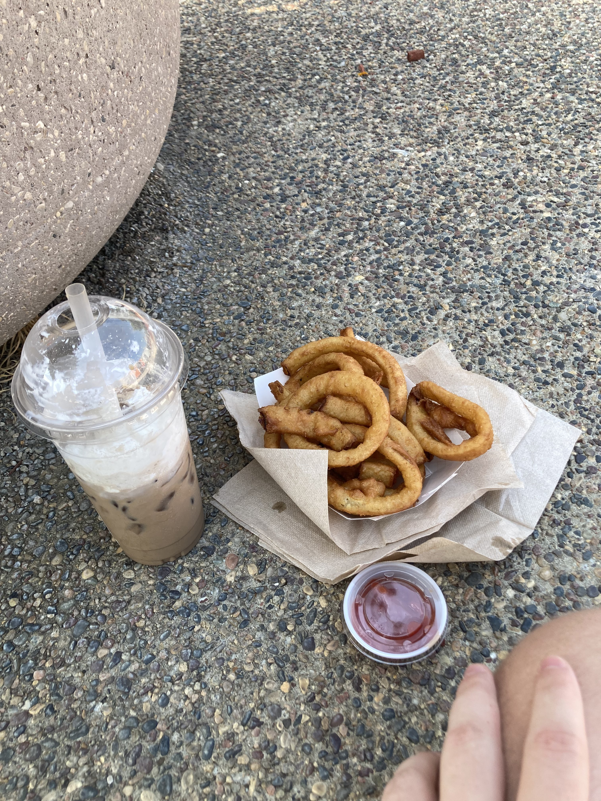
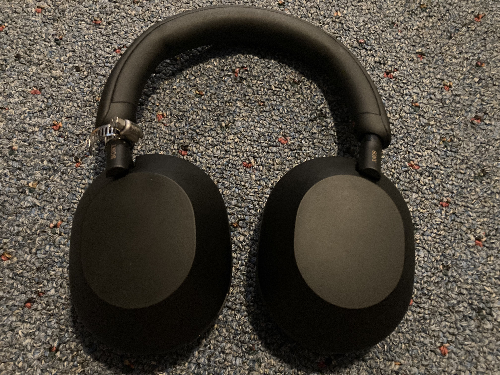

It's Saturday as I'm writing this, but holy kamoly, so much music was released yesterday, the 23rd of August 2024. I'm gonna dig the fuck in to what I listened to.
I'll start with my absolute favorite — the piece of music which left me in disbelief at how good it was — Imaginal Disk 💿, by Magdalena Bay. It's ascendant, how good this shit is. I loved all 4 of the pre-release singles, but now that I've listened to them in the context of the album, I can't imagine them any other way. It's easily the greatest album I've heard all year; I feel powerless to truly describe how good it is. It's an adventure, it's an exploration of sounds and ideas Magdalena Bay have dabbled in but not yet confronted with such magnitude, it's such a cohesive collection it's impossible to divorce any individual track from the whole, it's hard to truly grasp the vastness of its sound. My favorite track is definitely The Ballad of Matt & Mica right now, but only along with the preceding 14 songs. It feels like a triumph, a vision of the future.
Next up, one I liked a good amount! POWER, by illuminati hotties. Of the pre-release singles, I really only liked Power and The L, and boy howdy do I hate the song with Cavetown. No matter, though, as the album itself is really, really good. I need to give it a few more listens, but it might dethrone Free I.H. as my fave I.H. album. It's just sooooo tenderpunk; by golly, it's her most tenderpunk yet! Power is probably still my favorite song on the album, having listened to the whole thing, but in the context of the album, it absorbs the overarching theme of loss. The whole thing is very openly an exploration of Sarah's experience losing her mother, and falling in love in a whirlwind with someone, and it's done exceptionally well. However, I find myself at an opposite point in my life, right now, so I don't actually relate too much. I feel like I'll like POWER more with time.
Semifinally, Short 'n' Sweet, by Sabrina Carpenter. Didn't like this one! It evokes a lot of Ariana Grande, specifically some of Yours Truly and a lot of Positions, as well as some Olivia. It's very all-over-the-place and muddled? Taste and Espresso are really quite good, but the album feels very unfocused, and uninspired, and Sabrina's songwriting can be really bad. Her "gay awakening" line is quite possibly the worst thing I've heard from her. I wasn't a fan of Emails I Can't Send, so I'm not surprised I don't like Short 'n' Sweet, but. Yeesh.
Finally, Luna Li's When a Thought Grows Wings. I've never listened to Luna Li before — I heard about her from Schrafft, while we were discussing Imaginal Disk 💿 — and this album was, uh. Quite okay! Didn't spark anything in me, really. It was pleasant, and I see why people like this sort of thing, just not my jam.
Anyways, in regards to life, I'm back in Minnesota! I've got college starting up on Monday, the 26th! Moving into Zugpartment 2 in a week! Big things are happening, folks! I'm currently staying at my aunt's, and SPAMtown USA had their art festival today, so I went over to downtown to hang out for a bit. I got some onion rings and an iced mocha from the food truck area, and watched a live band for a bit. I thought I might run into one of the, like, 8 people I know in town, because the folks at board game night last night said they'd be there, but it was for naught, as I did not see any of them. Embarrassingly, the one person I did run into was the guy from blog029, who complimented my outfit! And he was with his girlfriend, and I was wearing the exact same jacket! So I KNOW he KNEW it was me! We didn't say anything to each other but, oh my god. It was like death. Fuck. It felt so embarrassing to even be there, alive, awake. Ugh 😭

Haven't had onion rings with ketchup before, and boy howdy, is that a match made on Earth ,’/
The lining on the naval bridge coat has been fraying heavily, so I brought that into the local seamstress to be mended. It'll be ready next Wednesday, so, that's nice. Oh, and my Sony WH-1000XM5s had the left hinge completely shatter, which is apparently a super common defect, so I Krazy Glue'd it together and fastened a hose clip onto it. It works totally fine, now, and the repair didn't cost $375, so.

My edgy and avant-garde headphones 🎧